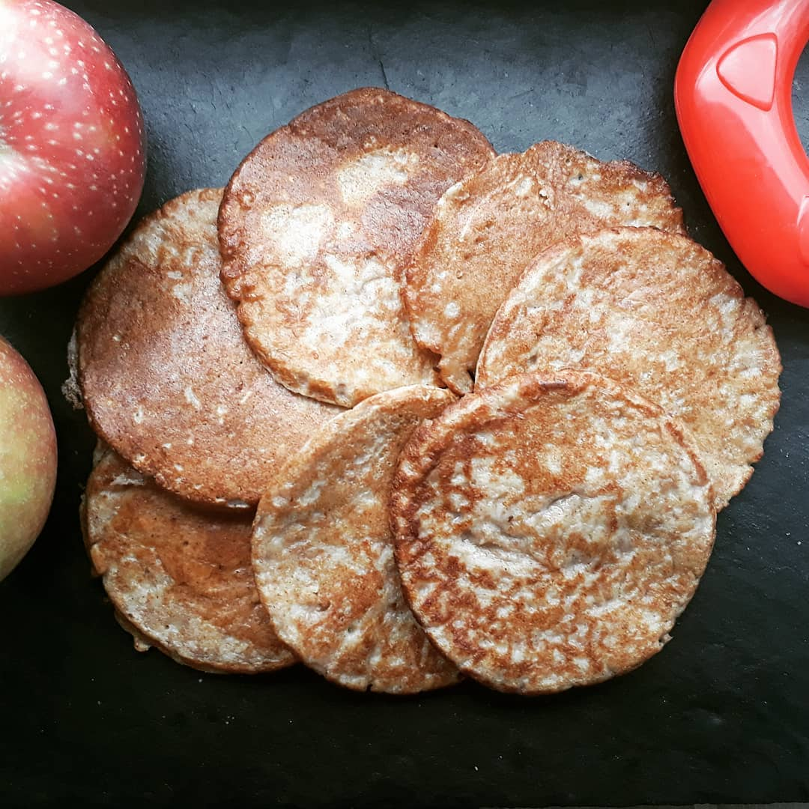

🍎🍪🍎🍪🍎🍪🍎🍪🍎🍪🍎🍪🍎🍪🍎
🇸🇰 Jablkové lievance
Potrebujeme:
1 väčšie jablko
60 g múky
1 vajce (do 1 roku iba žĺtok)
štipka škorice
40 g mlieka
30 g minerálky
trochu oleja na pečenie
na hrot noža soda bikarbony
Jablko ošúpeme, nastúhame na hrubšom strúhadle. Všetky ingrediencie pomiešame. Ak je masa riedka, pridáme ešte múku. Na malom množstve oleja upečieme malé kôpky, ktoré lyžicou upravíme na placky. • Mlieko: ja pre môjho ročného synčeka som už dala do receptu polotučné kravské mlieko, ale podľa vkusu môžeme dať aj ryžové alebo sójové mlieko.
• Keď mal synček menej ako rok, tento recept som robila iba so žĺtkom.
🍎🍪🍎🍪🍎🍪🍎🍪🍎🍪🍎🍪🍎🍪🍎🍪🍎🍪🍎
🇭🇺 Almás talkedli
Hozzávalók:
1 nagyobb alma
60 g liszt
1 tojás (1 év alatt csak sárgája)
csipet fahéj
40 g tej
30 g ásványvíz
késhegynyi szódabikarbóna
pici olaj a sütéshez
Az almát meghámozzuk, lereszeljük egy nagyobb lyukú reszelőn. Minden hozzávalót összekeverünk. Ha a massza híg, szórhatunk még egy kis lisztet hozzá. Pici olajra evőkanállal kisebb halmokat rakunk, majd ezeket laposra elsimítva aranybarnára sütjük. • Tej: én a már 1 éves kisfiamnak 1,5 %-os tehéntejet tettem a receptbe, de ízlés szerint tehetünk rizstejet vagy szójatejet is.
• Amíg kisfiam még nem töltötte be az egy évet, ezt a receptet tojássárgájával készítettem.
#babyfood_dk_12months #prikrmy #hozzataplalas #picifalat #picipoci #lievance #babylievance #dnesjem #mutimiteszikababa #mucniky #predeti #tarkedli #babakaja #uzsonna #olovrant #nyami #mutimiteszel #babymeals #12mesiacov #1eves #babanyami #príkrmy #hozzátáplálás #babyfood #mamavarí #anyafőz #mamavkuchyni #finomság